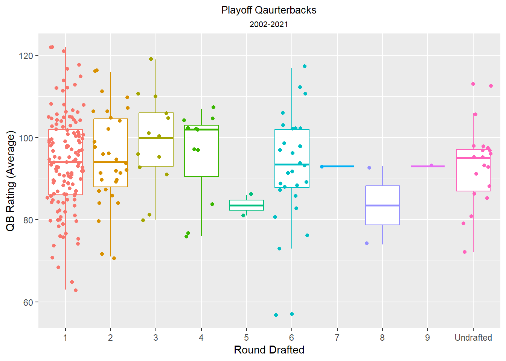

NFL QB Case Study
Cornelius Williams
2023-05-13
Ask
*I’m a data analyst working for a fictitious professional football team that’s looking to find out what’s the best path to having a successful team that can make the playoffs and ultimately the Superbowl. My job is to look at various sources of data to help the team I’m on present our findings to the executive board of the team.
Questions
Does it take a good defense to win the Superbowl?
Does it take a great quarterback play to win the Superbowl?
Does it matter which round a team drafts a quarterback?
Can a team draft a quarterback in a later round and pair them with a good defense to win?
Which rounds are quarterbacks that make it to the playoffs and Superbowl drafted in? Image from https://pixabay.com
Prepare
- I determine that to answer these questions I would need various types of data
- NFL defensive stats
- Quarterback regular season stats
- Quarterback playoff season stats
- Superbowl results
- NFL draft information
- After I determined what data would be needed to complete answer my questions, I set out to gather that data from various websites and stored it in local files using R packages listed below.
install.packages("rvest")
install.packages("dplyr")
install.packages("stringr")
install.packages("xml2")
install.packages("readxl")
install.packages("write_xl")
library(rvest)
library(dplyr)
library(stringr)
library(xml2)
library(readxl)
library(writexl)- Code used to gather and store data
setwd("C:/Users/Darnell W/Desktop/Portfolio/R practice/NFL Project/defense")
for(i in 2002:2021){
defense_url <- read_html(paste0("https://www.pro-football-reference.com/years/",i,"/opp.htm"))
defense_stats <- defense_url %>%
write_html(paste0("defense",i,".HTML"))
}
setwd("C:/Users/Darnell W/Desktop/Portfolio/R practice/NFL Project/passing")
for(i in 2002:2021){
passing_url <- read_html(paste0("https://www.espn.com/nfl/stats/player/_/season/",i,"/seasontype/3/table/passing/sort/QBRating/dir/desc"))
passing_stats <- passing_url %>%
write_html(paste0("passing",i,".HTML"))
}
setwd("C:/Users/Darnell W/Desktop/Portfolio/R practice/NFL Project/reg_season")
for(i in 2002:2021){
regsea_url <- read_html(paste0("https://www.espn.com/nfl/stats/player/_/season/",i,"/seasontype/2/table/passing/sort/QBRating/dir/desc"))
regsea_stats <- regsea_url %>%
write_html(paste0("regseason",i,".HTML"))
}
setwd("C:/Users/Darnell W/Desktop/Portfolio/R practice/NFL Project/draft")
for (i in 1986:2021) {
draft_url <- read_html(paste0("https://www.pro-football-reference.com/years/",i,"/draft.htm"))
draft_stats <- draft_url %>%
write_html(paste0("draft",i,".HTML"))
}
setwd("C:/Users/Darnell W/Desktop/Portfolio/R practice/NFL Project/superbowl")
sb_url <- read_html("https://en.wikipedia.org/wiki/List_of_Super_Bowl_starting_quarterbacks")
superbowl <- sb_url %>%
write_html("suberbowl.HTML")
}
setwd("C:/Users/Darnell W/Desktop/Portfolio/R practice/NFL Project/Team_abbreviations")
teamAbr_url < read_html("https://en.wikipedia.org/wiki/Wikipedia:WikiProject_National_Football_League/National_Football_League_team_abbreviations")
Teams <- teamAbr_url %>%
write_html("Team_abreviations.csv")
}Cleaning
- I cleaned each of the six dataframes. I then joined the dataframes until I ended up with one final dataframe to use for my visualizations
#cleaning Teams data frame
Teams <- Teams %>%
select(-ID, -Conference, -Division)
Teams <- rename(Teams, team_code=Abbreviation)
Teams <- rename(Teams, team=Name)
#cleaning Defense data frame
Defense_clean <- Defense
#removed characters and punctuation from Year column
Defense_clean$Year <- gsub("defense", "", Defense_clean$Year)
Defense_clean$Year <- gsub(".HTML", "", Defense_clean$Year)
#renaming some of the column names
Defense_clean <- dplyr::rename(Defense_clean, team=Var.2,
defense_rank=Var.1, year=Year)
#cleaning data frame by removing unecessary rows using value in the row
Defense_clean <- Defense_clean[!(Defense_clean$defense_rank == "Rk"),]
Defense_clean <- Defense_clean[!(Defense_clean$defense_rank == ""), ]
#modify strings to proper names
Defense_clean <- Defense_clean %>%
mutate(team = str_replace(team, "Football Team", "Commanders")) %>%
mutate(team = str_replace(team, "Redskins", "Commanders")) %>%
mutate(team = str_replace(team, "Oakland", "Las Vegas")) %>%
mutate(team = str_replace(team, "St. Louis", "Los Angeles")) %>%
mutate(team = str_replace(team, "San Diego", "Los Angeles")) %>%
mutate(team = str_replace(team, "Tampa Bay", "Tampa Bay"))
#remove columns
Defense_clean[, 3:28] <- (NULL)
#changed the column classes of df
Defense_clean <- type.convert(Defense_clean, as.is = TRUE)
#cleaning Draft data frame
Draft_clean <- Draft
Draft_clean <- rename(Draft_clean, round_drafted=Var.1, pick=Var.2,
player=Var.4, position=Var.5) #Renaming some of the column names
#removed characters and punctuation from Year column
Draft_clean$player <- gsub(" HOF", "", Draft_clean$player)
Draft_clean$player <- gsub("Michael Vick", "Mike Vick", Draft_clean$player)
Draft_clean$player <- gsub("Mitchell Trubisky", "Mitch Trubisky", Draft_clean$player)
Draft_clean$player <- sub("Robert Griffin III", "Robert Griffin", Draft_clean$player)
#remove whitespace from column
Draft_clean$player <- trimws(Draft_clean$player, which = "both")
#cleaning data frame by removing unecessary rows using value in the row
Draft_clean <- Draft_clean[(Draft_clean$position == "QB"),]
#removed columns that aren't need for analysis
#changing NAs to Undrafted
Draft_clean[is.na(Draft_clean)] <- "Undrafted"
Draft_clean <- Draft_clean %>%
select(-c(position:Var.29, Var.3, pick))
#changed the column classes of df
Draft_clean <- type.convert(Draft_clean, as.is = TRUE)
#cleaning Superbowl data frame
#removed all special characters from dataframe for cleaning
sb_clean<-sb %>%
mutate(across(everything(), ~gsub("[[:punct:]]", "", .x)))
#removed the last character from Team and Team.1 column, for cleaning
sb_clean$Team <- str_sub(sb_clean$Team, end = -2)
sb_clean$Team.1 <- str_sub(sb_clean$Team.1, end = -2)
#modifying strings for cleaning
sb_clean$Winning.QB <-gsub("MVP","",as.character(sb_clean$Winning.QB ))
sb_clean$Season <- gsub("AFLNFL", "", sb_clean$Season)
#changing column strings
sb_clean <- sb_clean %>%
select(-Super.Bowl) %>%
mutate(Team = str_replace(Team, "Redskins", "Commanders")) %>%
mutate(Team.1 = str_replace(Team.1, "Redskins", "Commanders")) %>%
mutate(Team = str_replace(Team, "Oakland", "Las Vegas")) %>%
mutate(Team.1 = str_replace(Team.1, "Oakland", "Las Vegas")) %>%
mutate(Team = str_replace(Team, "St. Louis", "Los Angeles")) %>%
mutate(Team.1 = str_replace(Team.1, "St. Louis", "Los Angeles")) %>%
mutate(Team = str_replace(Team, "San Diego", "Los Angeles")) %>%
mutate(Team.1 = str_replace(Team.1, "San Diego", "Los Angeles")) %>%
mutate(Team = str_replace(Team, "Tampa Bay", "Tampa Bay")) %>%
mutate(Team.1 = str_replace(Team.1, "Tampa Bay", "Tampa Bay")) %>%
mutate(superbowlqb = ifelse(!is.na(sb_clean$Winning.QB), 'yes', 'yes')) %>%
rename(Winning_team=Team, Losing_team=Team.1, Year=Season, Winning_qb=Winning.QB, Losing_qb=Losing.QB)
#deleted row 57 for cleaning
sb_clean <- sb_clean[-58,]
#removed Suberbowls before 2001
sb_clean <-sb_clean[sb_clean$Year > "2001" & sb_clean$Year < "2022",]
#made new DF where to converted two colomns to rows to easier join dfs
sb_clean <- data.frame(year = c(sb_clean[,"Year"], sb_clean[,"Year"]),
player = c(sb_clean[,"Winning_qb"], sb_clean[,"Losing_qb"]),
superbowl = c(sb_clean[,"superbowlqb"], sb_clean[,"superbowlqb"]),
team = c(sb_clean[,"Winning_team"], sb_clean[,"Losing_team"]))
#adding new column
sb_clean <- sb_clean%>%
mutate(sb_winner=c("yes"))
sb_clean[21:40, 5] = "no"
#changed the column classes of df
sb_clean <- type.convert(sb_clean, as.is = TRUE)
#combining dfs
sb_clean <- left_join(sb_clean, Draft_clean, by = "player")
#changing NA's to Undrafted
sb_clean[is.na(sb_clean)] <- "Undrafted"
#cleaning "Playoff"data frame
playoff_clean <- QBPlayoffs
#remove columns
playoff_clean[, 4:16] <- (NULL)
playoff_clean[, 1] <- (NULL)
#modify column
playoff_clean$Year <-gsub(".html", "", playoff_clean$Year)
#cleaning data frame by removing unecessary rows using value in the row
playoff_clean <- playoff_clean[(playoff_clean$POS == "QB"),]
#create new column Team_code
playoff_clean <- playoff_clean %>%
mutate(team_code = str_extract(playoff_clean$Name,"[A-Z/]+$")) %>%
dplyr::rename(playoff_rtg=RTG, year=Year, player=Name)
#trimmed the Name column to remove the Team_code from the name
playoff_clean$player <- trimws(playoff_clean$player, whitespace = "[A-Z/]+", which = "right")
#fixed one record where "III"needed to be added to one column and removed from another
playoff_clean$team_code <- sub("IIIWSH", "WSH", playoff_clean$team_code)
playoff_clean$player <- sub("Robert Griffin III", "Robert Griffin", playoff_clean$player)
#removing white space from column
playoff_clean$player <- trimws(playoff_clean$player, which = "both")
#changing column strings
playoff_clean <- playoff_clean %>%
mutate(team_code = str_replace(team_code, "OAK", "LV")) %>%
mutate(team_code = str_replace(team_code, "STL", "LAR")) %>%
mutate(team_code = str_replace(team_code, "SD", "LAR")) %>%
mutate(team_code = str_replace(team_code, "WSH", "WAS"))
#joining data frames
playoff_clean<-left_join(playoff_clean, Teams, by = "team_code")
#removed columns
playoff_clean<-playoff_clean %>%
select(-team_code, -POS)
#changed the column classes of df
playoff_clean <- type.convert(playoff_clean, as.is = TRUE)
#cleaning Regular Season data frame
Regsea_clean<-Regsea
#create new column Team_code
Regsea_clean <- Regsea_clean %>%
mutate(team_code = str_extract(Regsea_clean$Name,"[A-Z/]+$")) %>%
dplyr::rename(player=Name, year=Year, rtg=RTG)
#trimmed the Name column to remove the Team_code from the name
Regsea_clean$player <- trimws(Regsea_clean$player, whitespace = "[A-Z/]+", which = "right")
#fixed one record where "III"needed to be added to one column and removed from another
Regsea_clean$team_code <- sub("IIIWSH", "WSH", Regsea_clean$team_code)
Regsea_clean$team_code <- sub("IIICLE", "CLE", Regsea_clean$team_code)
Regsea_clean$player <- sub("Robert Griffin III", "Robert Griffin", Regsea_clean$player)
#removing white space from column
Regsea_clean$player <- trimws(Regsea_clean$player, which = "both")
#changing column strings
Regsea_clean <- Regsea_clean %>%
mutate(team_code = str_replace(team_code, "OAK", "LV")) %>%
mutate(team_code = str_replace(team_code, "STL", "LAR")) %>%
mutate(team_code = str_replace(team_code, "SD", "LAC")) %>%
mutate(team_code = str_replace(team_code, "WSH", "WAS"))
#removed characters and punctuation from Year column
Regsea_clean$year <- gsub("regseason", "", Regsea_clean$year)
Regsea_clean$year <- gsub(".HTML", "", Regsea_clean$year)
#changed the column classes of df
Regsea_clean <- type.convert(Regsea_clean, as.is = TRUE)
#remove columns
Regsea_clean[, 3:16] <- (NULL)
Regsea_clean[, 1] <- (NULL)
#combining dfs
Regsea_clean<-left_join(Regsea_clean, Teams, by = "team_code")
#removed columns
Regsea_clean<-Regsea_clean %>%
select(-team_code)
Regsea_clean<-left_join(Regsea_clean, Draft_clean, by = "player")
#changing NA's to Undrafted
Regsea_clean[is.na(Regsea_clean)] <- "Undrafted"
#combining dfs
Regsea_clean<-left_join(Regsea_clean, playoff_clean, by = c("player","team","year"))
Regsea_clean1<-left_join(Regsea_clean, Defense_clean, by = c("team","year"))
qb_final<-left_join(Regsea_clean1, sb_clean, by =c("player","year","team","round_drafted"))
qb_final <- qb_final %>%
mutate(sb_winner = ifelse(is.na(sb_winner), "no", sb_winner)) %>%
mutate(superbowl = ifelse(is.na(superbowl), "no", superbowl))
qb_final <- type.convert(qb_final, as.is = TRUE)Analyze
- This is a partial view of the final data frame that was used to perform my analysis and visualizations.
- The data frame contains all quarterbacks from 2002 to 2021 along with relevant information listed below.
- The quarterbacks regular season and playoff passing efficiency.
- The ranking of the quarterbacks defense.
- If the quarterback made the playoffs.
- Did the quarterback play in or won the Superbowl.
Share
In this graph I used a boxplot to show the number of of quarterbacks that made the playoffs from 2002 to 2021.
- The results shown in this boxplot show that over the period of 2002 to 2021 that the majority of the quarterbacks that made it to the playoffs were drafted in the first round.

Here I used a lollipop chart to show how the average quarterback rating compare based on the round drafted.
- The results shown in this bar chart shows that even though quarterbacks drafted in the 1st and 2nd round were tie with the highest average quarterback rating, the next it’s within five points of the next five positions.

This bar chart shows the average defensive ranking of quarterbacks by round drafted.
- This chart shows the average defensive ranking of quarterbacks for the first, second, and third round were the same. The quarterbacks who were drafted in the fourth, sixth, or undrafted were only one ranking lower.

This facet plot shows the number of different quarterbacks that participated in the Superbowl from 2002-2021.
- In this plot it shows how more quarterback from the first round participated in the last twenty Superbowls than all others combined.

Conclusion
The data has shown that over the twenty year period that teams with a quarterback drafted in the first round have a not only made the playoffs more, they also were more likely to make it to the Superbowl.
The data also shows that with the exception of quarterbacks drafted in the fifth round, the average passer rating of all quarterbacks is within seven points.
When I look at the defensive rankings based on round drafted, only quarterbacks drafted in the ninth round had a defense in the top fifteen. Out of 32 teams most defenses were ranked in the bottom half of the league.
Taking in the whole picture the data shows that since most quarterbacks having similar passer ratings and defensive rankings, that drafting a quarterback in the first round is a team’s best chance to make the playoffs or the Superbowl.
Act
- With the information given the organization decides to improve their chances of sucess and draft a quarterback with the 15th pick of the first round of the upcoming draft.
Image from https://pixabay.com